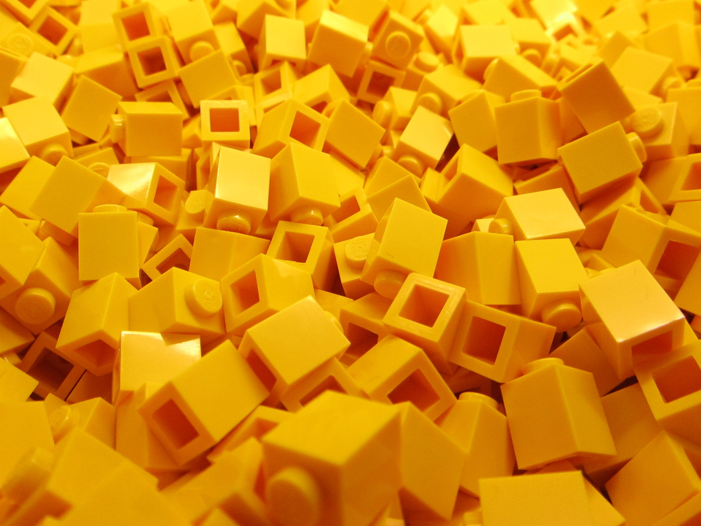

Hello! and welcome to my website, which I coded from scratch. My name is Kevin Wu, and I am a current sophomore at the University of Chicago pursuing a double major in applied math and economics. I enjoy coding on the side. You can find some of my projects and research on this website and on GitHub.
Outside of my studies, my greatest passion is building LEGO creations. Check out my gallery on this site, as well as my Flickr, Instagram, and YouTube for more LEGO-related content! My other hobbies include playing guitar and cello, listening to music, reading, swimming, and supporting Borrusia Dortmund. Heja BVB!!!
